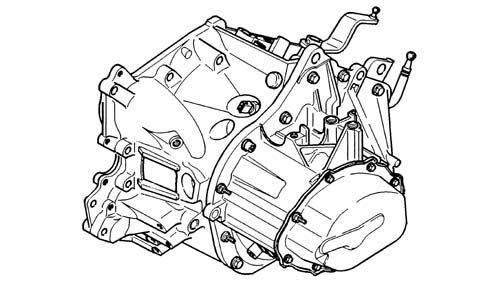
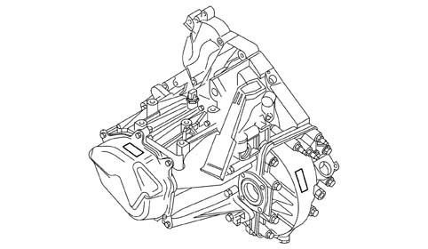
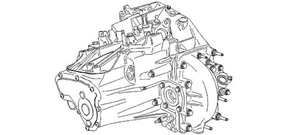
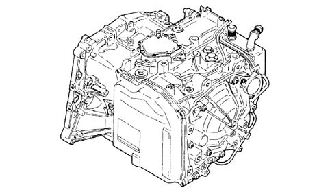
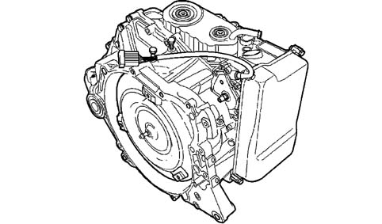

INTRODUCTION
- Path
- Descriptions > 21 GEARBOX UNIT > INTRODUCTION
- Kind
- system description
- Applies to
- all engines; all production periods
- Interactive page
- https://sloeber94.github.io/elrnDB-fUlss/en/#/179006630
Applies to: all engines; all production periods
The vehicle comes with manual and automatic gear levers positioned on the central console. This new location is very user-friendly, leaves room to pass between the two front seats and also allows passengers to move easily between the 1st and 2nd rows.
Three different types of manual gearboxes are available according to the different engine types, namely:
- BE4 type 5 speed manual gearbox for the 2.0 16v engine;

- ML5C type 5 speed manual gearbox for the 2.0 16v JTD engine;

ML6C type 5 speed manual gearbox for the 2.2 16v JTD engine.

The clutch is hydraulically operated for these types of gearboxes to ensure that minimum effort is required and to prolong its life.
Two different types of automatic transmissions are available according to the different engine types, namely:
- AL4 type manual gearbox for the 2.0 16v engine;

- 4HP20 type automatic transmission for the 3.0 V6 24v engine;
